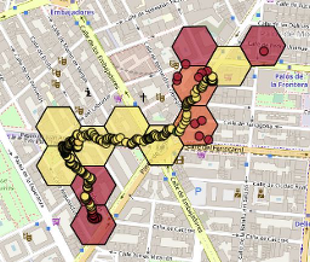

Respiramos con Madrid es un proyecto que busca visibilizar la problemática de la contaminación en la ciudad de Madrid involucrando a la ciudadanía, empoderándola a través de la fabricación de sus propios medidores y ofreciendo herramientas de visualización.
Las rutas que aparecen en el mapa se corresponden con las cantidades de contaminación a las que se ha visto expuesta la persona que ha llevado el medidor. Las celdas de colores muestran una media temporal de todas las medidas tomadas en esa área, por lo que a través de la experiencia individual generamos conocimiento colectivo.
El proyecto nace como Satélites DIY en 2018 y toma la forma actual como parte de la programación del Laboratorio de Ciencia Ciudadana (CiCiLab) de Medialab Prado, en el marco de su programa de mediación-investigación 2018-2021.
El mapa representa los valores medidos por los usuarios y usuarias en sus paseos por la ciudad, desde sus hogares, portales o lugares de trabajo, en bicicleta, caminando o sentadas. Los Oxógonos miden los niveles de partículas en el aire en tiempo real, geolocalizando los puntos de medida para que tenga sentido su visualización en el mapa. Cualquier persona con un Oxógono, podrá registrarse en la web y comenzar a subir sus rutas y los valores correspondientes de PM a los que se ha expuesto.
Las Celdas (hexágonos) que aparecen encima de las rutas, asignan un color a la media de los valores medidos en esa área. El usuario o usuaria que pase más veces por un área, se convierte en “propietario” de la celda y su nombre aparecerá reflejado en la medición.
En la leyenda encontrarás los colores que representan los valores de las partículas PM2.5 siguiendo las indicaciones de la OMS.